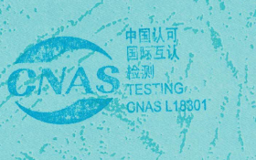

研究所 · 空天智能与智造研究所


01 / 04

02 / QUALITY PROOF
精度与性能，
由第三方验证。
AeroBase 3D V1.0 面向航空三维测量场景，完成了从几何精度到百亿级点云处理的第三方验证。

CNAS L18301CNAS 检测实验室认可标识
0.01 mm铆钉齐平度误差
0.009 mm翼身截面偏差
0.182 s点云读取 / 亿点
0.095 s波纹度检测 / m²
验证依据：GB/T 25000.51-2016；第三方检测机构：苏测检测技术有限公司；测试版本：AeroBase 3D V1.0。
Aerohand 3D 与 Aerowave 3D 的对应指标待补充。
03 / RESEARCH → PRODUCT
从几何算法，
到装进产线的工具。
研究所围绕点云处理、几何分析与航空检测开展持续研究，并把算法能力转化为面向真实工程现场的软件产品。
几何处理与点云研究
法向估计、网格去噪、几何恢复、点云与图像的联合增强——解决非结构化三维数据的几何理解问题。
航空检测算法
把几何分析能力落到铆钉齐平度、对缝间隙与阶差、圆孔位置度、波纹度与型面偏差等航空专用检测对象上。
工程化产品
封装为可部署的检测软件与手持装备，经第三方验证后进入航空制造与维修检测现场。
05 / INSTITUTE
研究，不止停留在论文里。
我们关注从基础方法、核心算法到可部署系统的完整链路。
06团队成员
04核心研究方向
05论文成果
03产品系列